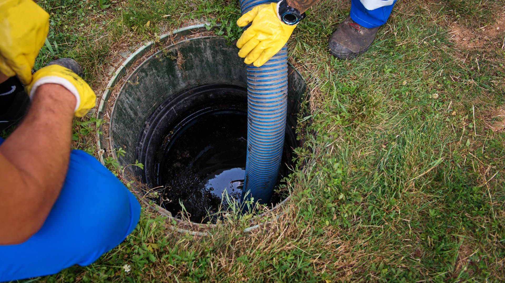
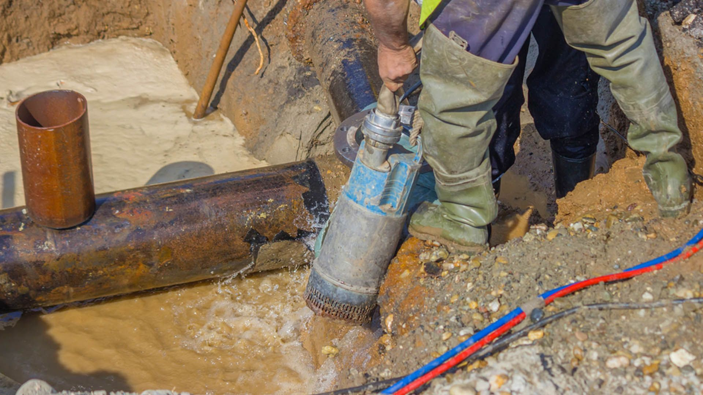
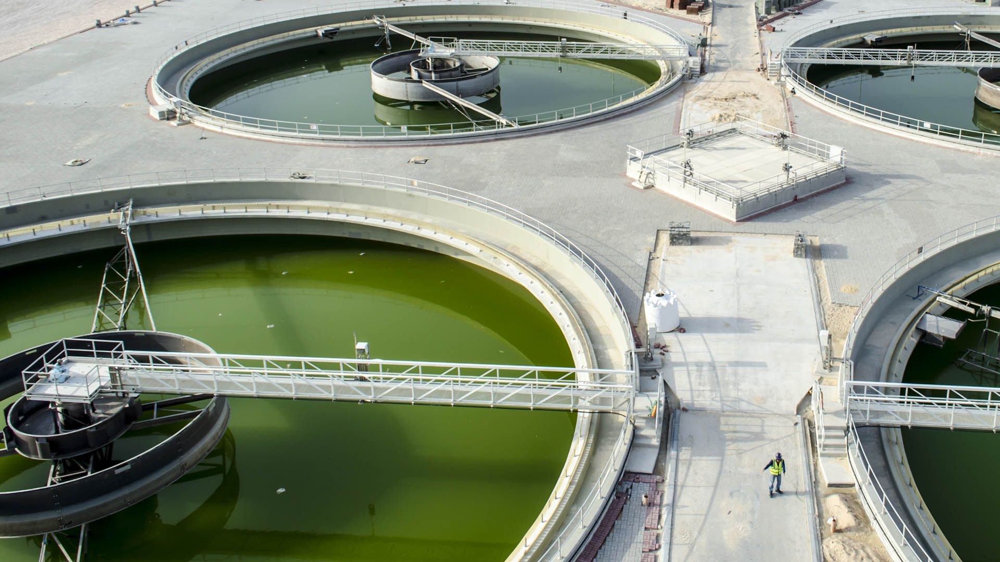
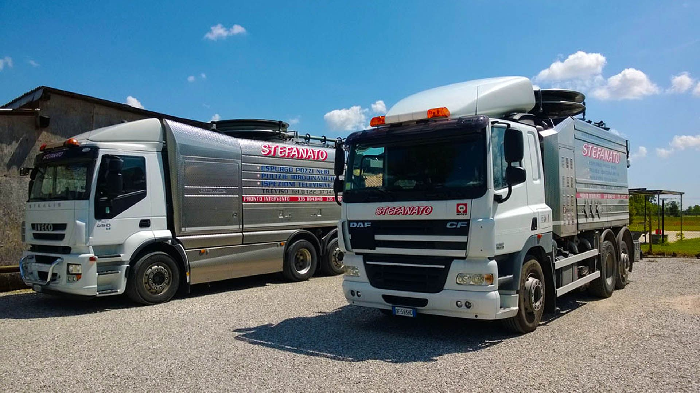
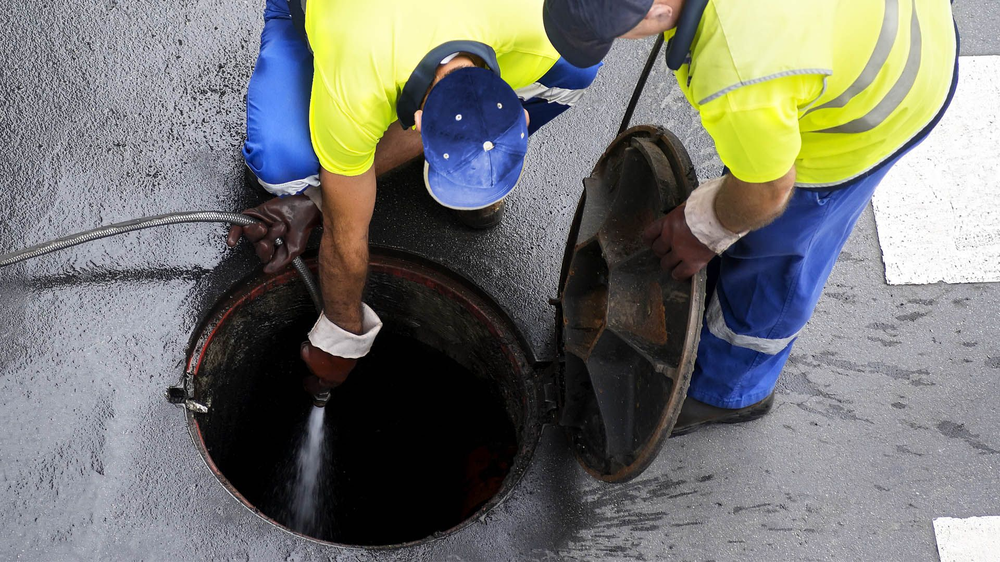
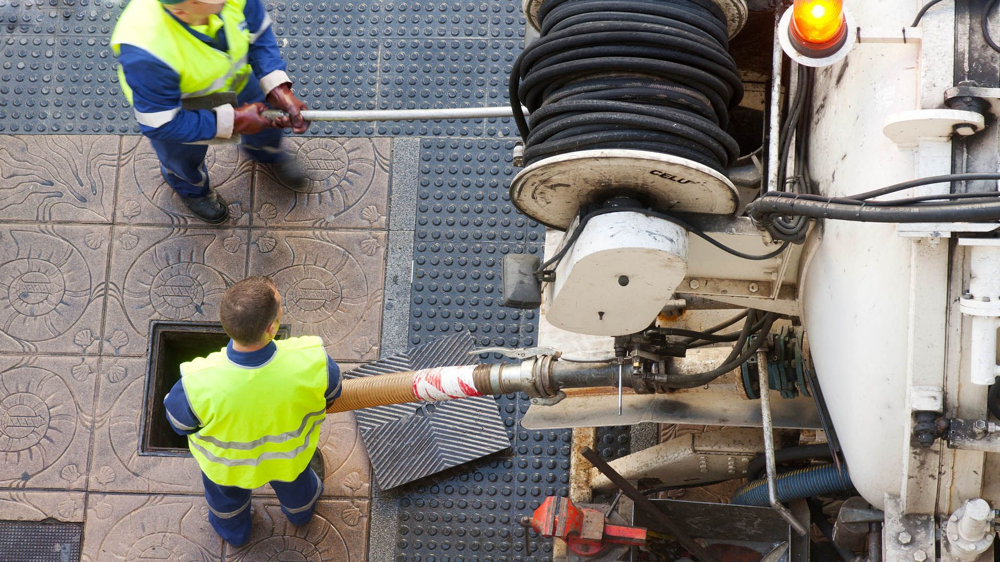
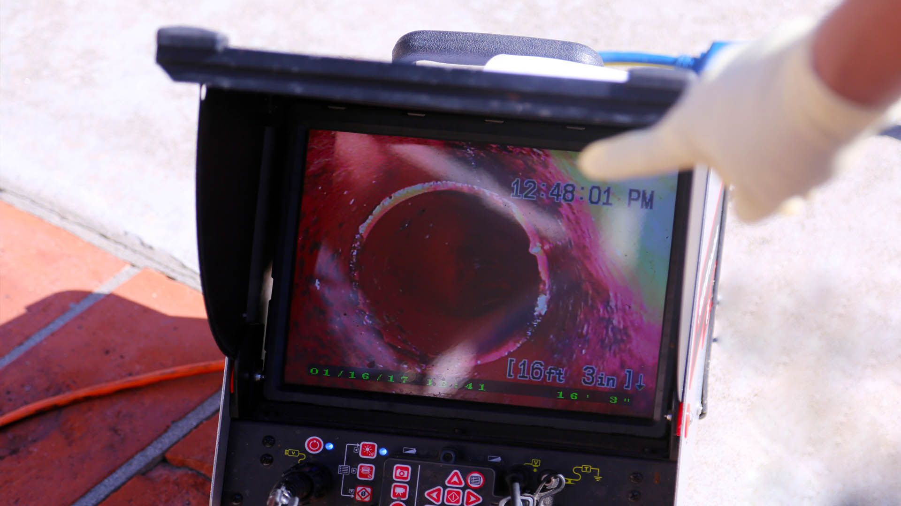
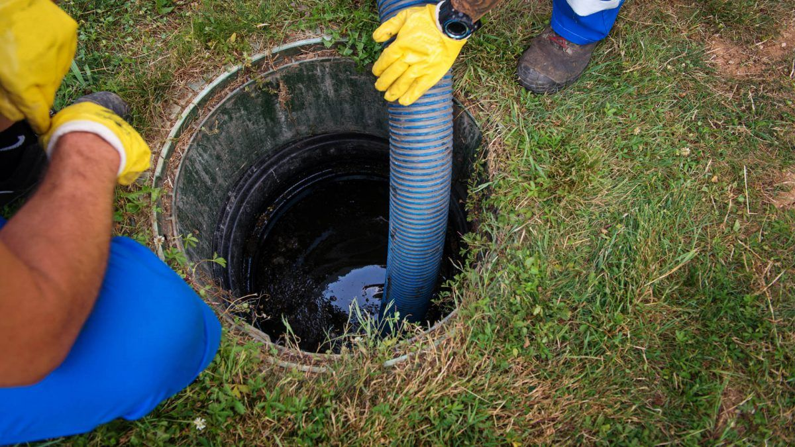

01 — L'azienda
Una realtà del territorio.
Stefanato Servizi Ecologici lavora da Treviso. Gestione fraterna (Francesco e Andrea Stefanato). Servizi per enti, aziende e privati: spurgo pozzi neri e fognature, video ispezioni e mappatura, espurgo fosse imhoff.
02 — I mezzi
Mezzi propri, personale formato.
Ogni intervento parte dalla nostra sede con attrezzature nostre: niente subappalti da coordinare, un solo referente.
03 — Il metodo
Dalla chiamata al documento.
Chiamata: ci dite dove e cosa: fossa, pozzetto, condotta, urgenza. Sopralluogo: valutiamo accesso, volumi e mezzo adatto. Intervento: aspirazione, lavaggio e, se serve, video-ispezione.
Servizi
Cosa facciamo, uno per uno.
Aprite il servizio che vi interessa: descrizione e foto dal campo.
Svuotamento e pulizia di fosse biologiche, Imhoff e degrassatori.
Ispezione delle condotte con telecamera: si vede il problema prima di scavare.
Svuotamento e pulizia di fosse biologiche, Imhoff e degrassatori.
Ricezione, selezione e avvio a recupero dei materiali, perché tornino a essere risorse.
Spurgo e pulizia di fosse, pozzetti e condotte, con mezzi attrezzati e smaltimento autorizzato di quanto aspirato.
Pulizia di reti e condotte con getto ad alta pressione e aspirazione.
Dove siamo
Da Treviso, a portata di mezzo.
Distanze dalla sede ai capoluoghi vicini, per capire in quanto tempo un mezzo può essere sul posto.
Lavora con noi
Autisti, operatori, tecnici: cerchiamo persone che conoscono il territorio.
Mandateci il vostro curriculum: lo leggiamo tutto, e vi richiamiamo.
Contatti
Scriveteci, vi richiamiamo.
Enti, aziende e privati: indicateci il servizio e la zona, vi rispondiamo con tempi e preventivo.